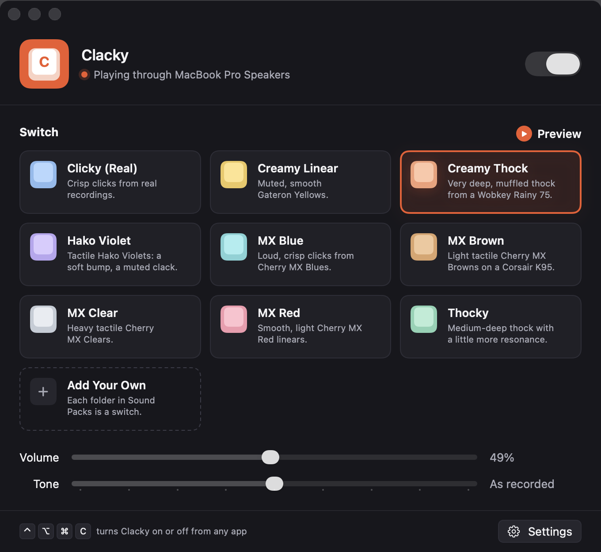

Every keystroke, a little more satisfying.
Real recordings of mechanical keyboards, played as you type, in any app on your Mac.
01 — The switch
Nine switches.
Pick your sound.
02 — Try it
Type here.
Hear every switch.
These are the same recordings Clacky plays. Pick a switch below, then type anything. Space, Enter and Delete sound deeper, like they do in the app.
03 — Every key
Every key sounds a little different.
Like a real keyboard, each key gets its own pitch, never more than half a semitone off, and keeps it.
04 — Quiet when it should be
Pauses on calls. Silent in games. ⌃⌥⌘C anywhere. Blind to passwords.
Clacky goes quiet while another app uses the microphone, stays silent in the apps you choose, and macOS keeps it out of password fields entirely.

05 — What's inside / 09
- Real recordings
- Nine switches
- Every key its own
- One sound per press
- Release sounds
- Stereo placement
- Deeper or brighter
- Quiet on calls
- Your own sounds
06 — The switches
Made for the way you already type.
07 — Questions
Frequently
asked questions
What is Clacky?+
A Mac app that plays real recordings of mechanical keyboards every time you press a key, in any app. Pick a switch, set the volume and tone, and forget it's there.
Can it see what I type?+
It gets key codes: which physical key went down or came up, so it knows which sound to play. macOS blocks it entirely while you type into a password field.
Why does it ask for Input Monitoring?+
That's the macOS permission that lets an app hear key presses in other apps. You can turn it off any time in System Settings, under Privacy & Security.
Why does macOS say it can't check Clacky for malware?+
Clacky isn't notarized by Apple yet, so the first time you open it macOS stops it. Open System Settings → Privacy & Security, scroll down, and click Open Anyway. You only do this once. The source code is on GitHub if you'd rather build it yourself.
Will people on my calls hear it?+
Clacky can pause while another app is using the microphone, like Zoom, FaceTime, Meet or dictation, and says which app in its window. Turn it on in Settings → Stay Quiet. This needs macOS 14 or later.
Does holding a key spam clicks?+
No. A held key plays once, like a real keyboard. macOS's auto-repeat never adds more.
Can I add my own sounds?+
Yes. Every folder in Clacky's Sound Packs folder is a switch. Name the files like standard-down-1.wav; WAV, AIFF, CAF, MP3 and M4A all work.
My monitor has no speakers. Now what?+
On Automatic, Clacky notices the output can't play and switches to your Mac's speakers, then tells you. Or pick a specific output in Settings.
Which Macs does it run on?+
macOS 13 or later. Pausing during calls needs macOS 14 or later.
Where do the sounds come from?+
They're cut from public-domain (CC0) recordings of real keyboards on Freesound.org. Every source is credited in the app's Sound Packs folder.
Every key.
Satisfying.
Unzip Clacky and drag it into Applications.
Open it. If macOS stops it, go to System Settings → Privacy & Security and click Open Anyway.
Allow Clacky under Input Monitoring so it can hear your keys.
Pick a switch and start typing.